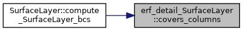
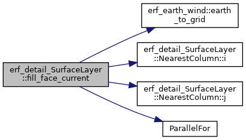
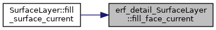
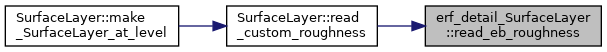
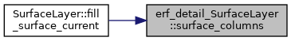

- Generated by
 1.9.1
1.9.1
|
ERF
Energy Research and Forecasting: An Atmospheric Modeling Code
|
Classes | |
| struct | NearestColumn |
| struct | LsmFluxColumn |
| struct | CoupledCurrentCells |
Functions | |
| Gpu::HostVector< Real > | read_eb_roughness (std::istream &file, const std::string &fname, const Geometry &geom, int lev) |
| bool | covers_columns (const Array4< const Real > &a, const Box &b) |
| NearestColumn | surface_columns (const Geometry &geom, const IntVect &ng) |
| void | fill_face_current (MultiFab ¤t, int dir, const iMultiFab *lmask, const NearestColumn &in_domain, Real speed, const CoupledCurrentCells *coupled) |
| bool erf_detail_SurfaceLayer::covers_columns | ( | const Array4< const Real > & | a, |
| const Box & | b | ||
| ) |
Whether a planar field covers the columns of b laterally; a null field covers nothing and is not tested.
Referenced by SurfaceLayer::compute_SurfaceLayer_bcs().

| void erf_detail_SurfaceLayer::fill_face_current | ( | MultiFab & | current, |
| int | dir, | ||
| const iMultiFab * | lmask, | ||
| const NearestColumn & | in_domain, | ||
| Real | speed, | ||
| const CoupledCurrentCells * | coupled | ||
| ) |
Set one component of the surface current on the faces normal to dir, ghost cells included. Only water moves: a face takes the current where the cells on both sides of it are water (land mask 0) and, with a coupler, covered by the ocean; it is at rest elsewhere. Without a coupler the current is uniform; with one it is the average over the two cells of the coupler's current turned to the grid axes.
| [out] | current | one component of the current, on 2D boxes at k = klo |
| [in] | dir | 0 for the x-component on x-faces, 1 for the y-component on y-faces |
| [in] | lmask | land mask on one 2D box for each box of the current, or null |
| [in] | in_domain | the cells a face reads (surface_columns) |
| [in] | speed | uniform current [m/s], used without a coupler |
| [in] | coupled | the coupler's current at the cells, or null without a coupler |
Referenced by SurfaceLayer::fill_surface_current().


| Gpu::HostVector<Real> erf_detail_SurfaceLayer::read_eb_roughness | ( | std::istream & | file, |
| const std::string & | fname, | ||
| const Geometry & | geom, | ||
| int | lev | ||
| ) |
Referenced by SurfaceLayer::read_custom_roughness().

| NearestColumn erf_detail_SurfaceLayer::surface_columns | ( | const Geometry & | geom, |
| const IntVect & | ng | ||
| ) |
The cell a face of the surface current reads for a cell beside it: the cell itself, or outside a non-periodic domain the nearest one inside it, since the surface fields' ghost cells there hold no data. The periodic ghost cells, ng deep, hold their images.
It also picks the column whose lowest state cell gives the surface pressure of a cell of a planar surface field, halo included. The choice depends on the domain only, never on the box holding the cell, and the cell read lies in the domain or its periodic image: a valid cell of the box or a ghost cell of the state, filled by FillBoundary from another grid of the level or a periodic image, or at a coarse/fine boundary by FillPatch from the coarser level.
| [in] | geom | geometry of the level |
| [in] | ng | lateral ghost cells of the surface fields read |
Referenced by SurfaceLayer::fill_surface_current(), SurfaceLayer::fill_tsurf_with_coupled_sst(), SurfaceLayer::fill_tsurf_with_sfc_sst(), and SurfaceLayer::fill_tsurf_with_sst_and_tsk().
